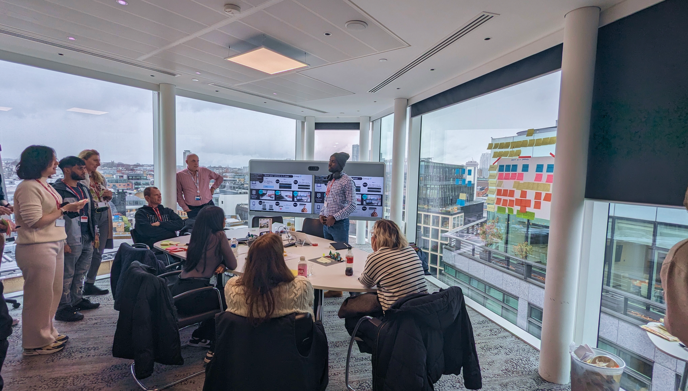

1. Challenge
Drive the teams maturity. In order to crack on with this it was important we developed a measure of where we were performing, we did this via periodic maturity assessments. This gave us a strong indicator or where to improve - allowing the Capgemini team to agree on a stratedgy to upskill DSG designers and leadership.
2. Working with the internal team
Myself and 4 other Capgemini Invent consultants joined the DSG team. Walking through real projects and providing guidance throughout. Guidance involved, co-creation workshops, focused process improvements and hands on leadership guidance.

3. Operating within the Organisation
The team spent time understanding the current working dynamics by engaging with external stakeholders, assessing collaboration methods, and mapping business specialisations.
4. Understanding the Team
We conducted day-to-day observations and feedback loops to identify strengths and areas for improvement. UX maturity assessments were also conducted to align the team's practices with best-in-class UCD methodologies.
5. Shaping Processes and Ways of Working
Our focus was on project delivery, UX knowledge sharing, and agile integration. We led project delivery efforts, conducted six learning workshops, and integrated agile practices with the help of the Agile Coach and Automation Consultant.

6. Results
Over the course of 11 months, the team transitioned from operating in silos to functioning as a cohesive unit. This shift resulted in enhanced team collaboration, improved UX maturity, and increased value delivery.
7. Conclusion
The transformation of the DSG team into a best-practice UCD team highlights the importance of structured processes, continuous learning, and collaborative working environments. This case study serves as a blueprint for building high-performing UCD teams in complex organisational contexts.